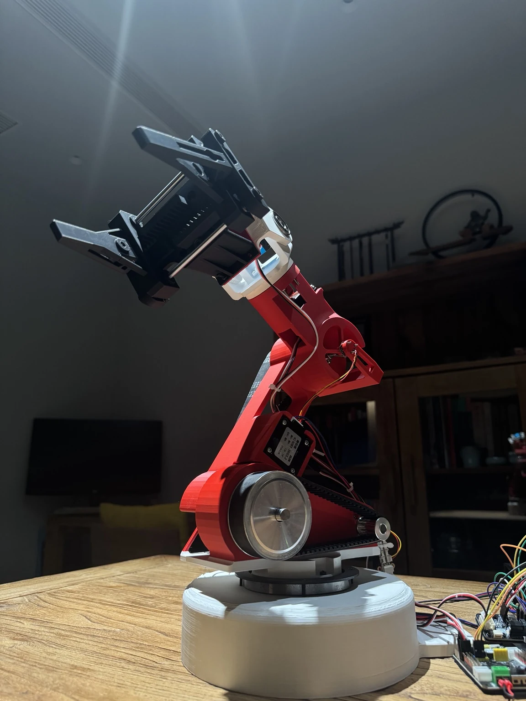
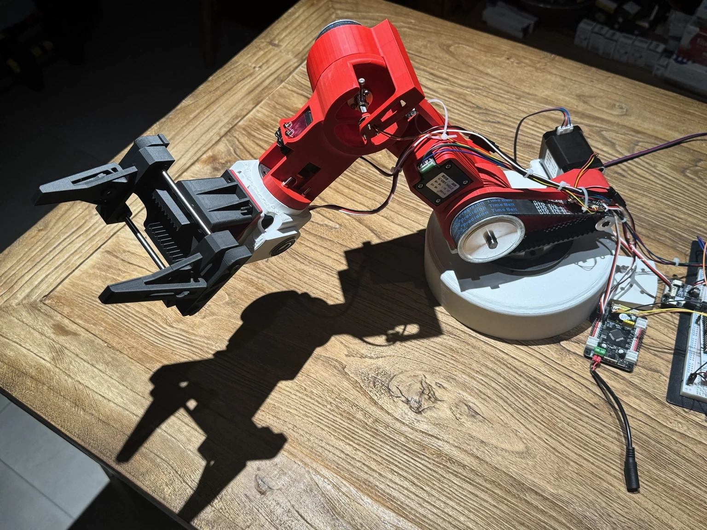
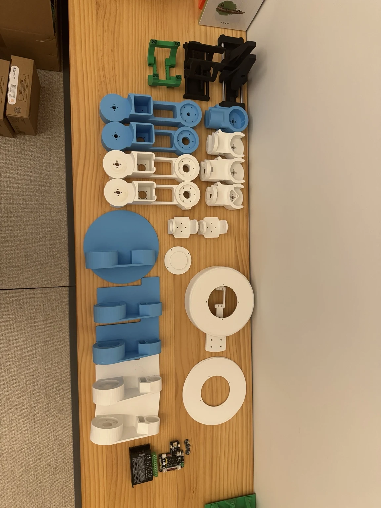
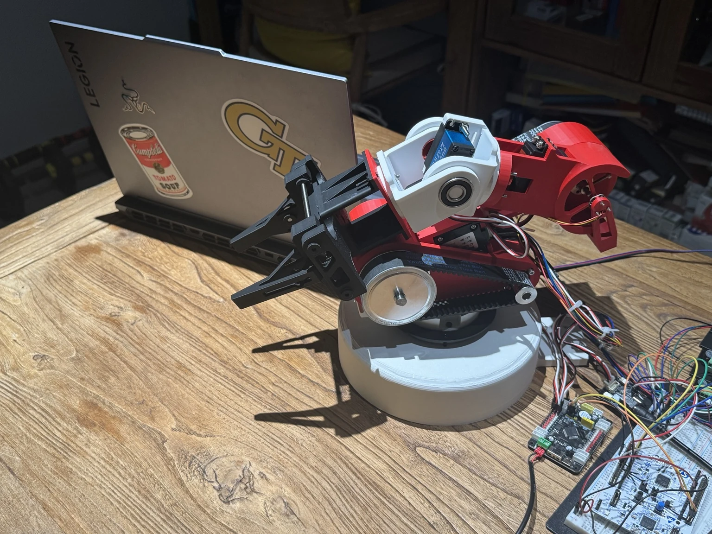
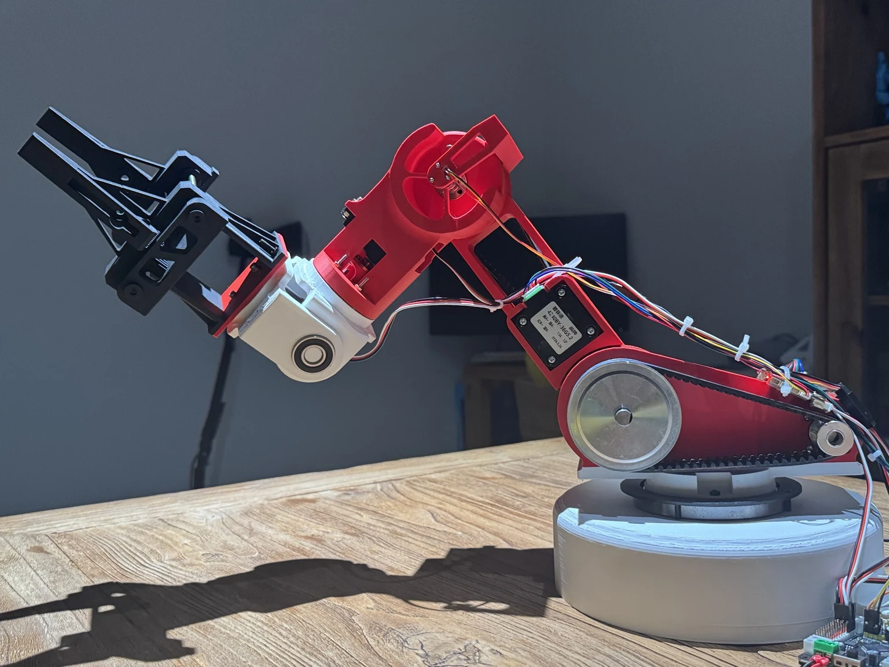
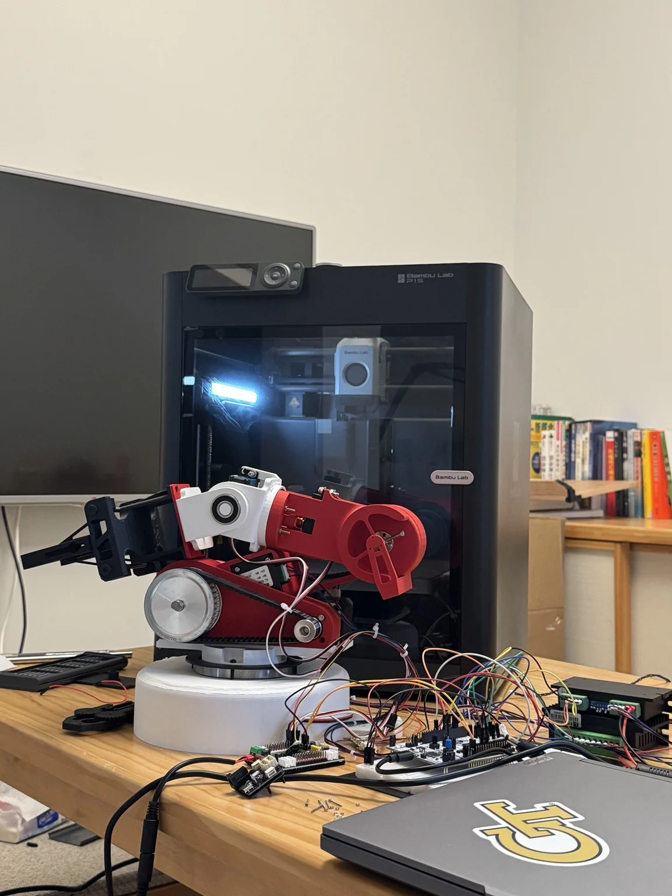
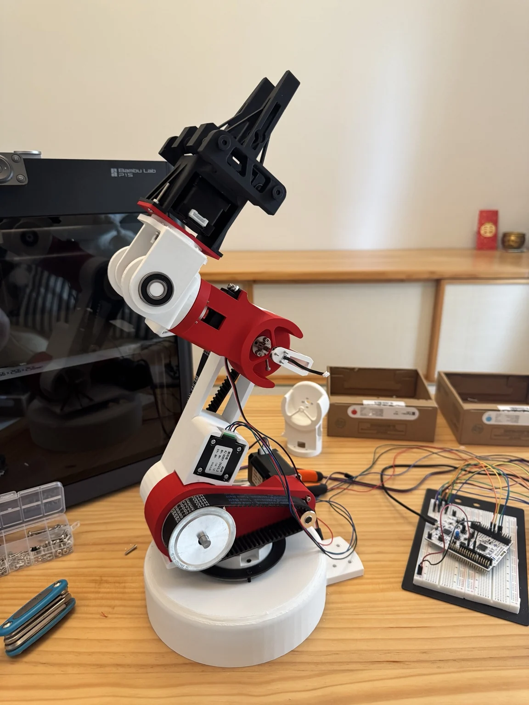
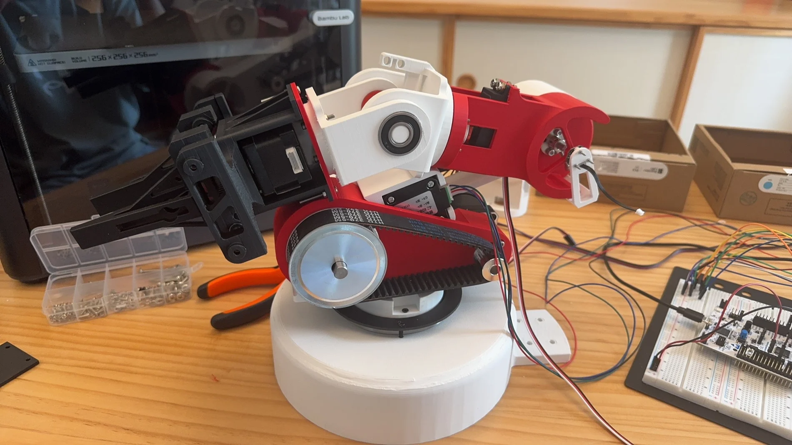
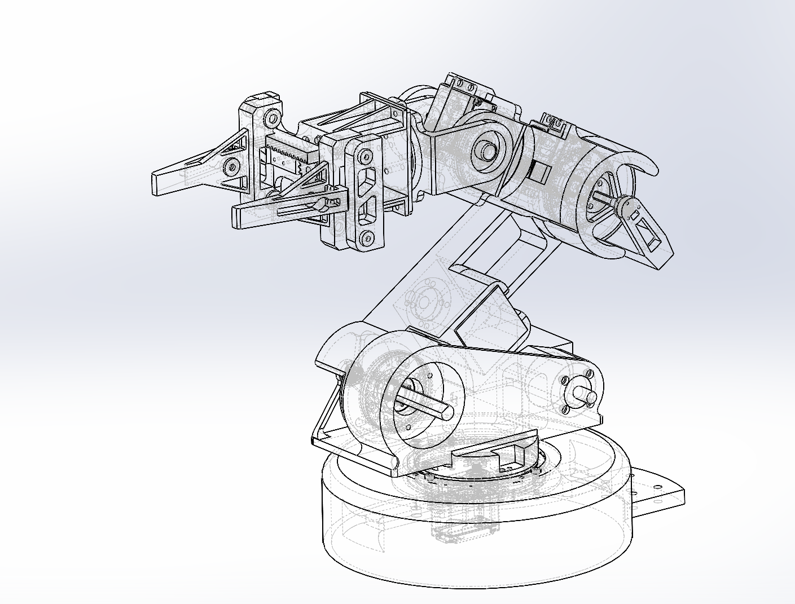

BUILD LOG / 01
Structure takes shape.Joints · links · transmission · fit checks

Designed from a blank CAD file, printed one revision at a time, wired on the bench, modeled in MuJoCo, and finally made to move as one machine.
W-D1 started with the mechanics: custom 3D-printed joints, timing-belt reductions, bearings, shafts, and actuator mounts. The shoulder and elbow use stepper-driven reductions; the wrist uses servo actuation. Once the structure could hold itself together, an STM32 took over the low-level motion while a Python interface became the place to command and debug it.
The simulation grew beside the hardware instead of after it. A MuJoCo twin became the safer place to test kinematics, joint-space motion, and handwriting trajectories — then compare those ideas against the much less forgiving physical arm.
Joint packaging, belt reductions, bearings, shafts, stiffness, printability, and repeated physical iteration.
STM32, stepper drivers, servo actuation, serial interfaces, command parsing, and coordinated motion.
Absolute encoder integration, raw-angle diagnostics, mapping, zero calibration, and feedback development.
MuJoCo, kinematics, joint limits, trajectory generation, and a browser-accessible interactive model.

This is the part I cared about: multiple joints moving together across a real working range, with belts, printed structure, wiring, backlash, gravity, and all the things a simulation politely leaves out.
Interactive browser model with joint controls, showcase motion, and single-stroke handwriting.
Two short assembly logs from the stage where the CAD became hardware: fitting joints, routing the transmission, stacking modules, and watching the silhouette finally appear.



Stepper control, servo actuation, encoder communication, serial parsing, and host-side commands all had to coexist on the same prototype.
When joint angles looked wrong, I went back to raw counts, zero references, packet interpretation, and wrap-around behavior instead of treating the encoder as a black box.
Reduction ratio, belt tension, backlash, shaft support, packaging, and stiffness all changed once the arm had to carry itself under real loads.
The digital twin follows the same joint structure so simulation and hardware can slowly converge instead of becoming two unrelated versions of the project.
The cleaner images show the finished prototype. These older frames show something equally important: how it actually lived while I was building it.



